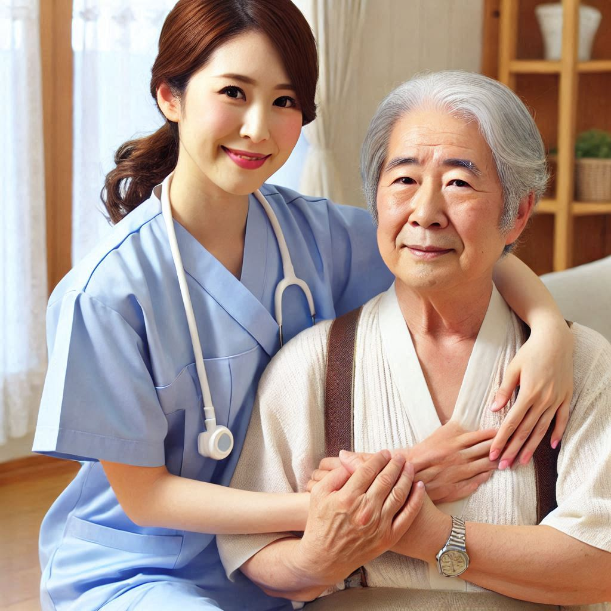

Curación de Heridas
Realizamos cuidados profesionales para heridas leves, complejas o postquirúrgicas:
- Higiene adecuada: Limpieza y desinfección para prevenir infecciones.
- Vendajes especializados: Uso de apósitos avanzados según la herida.
- Seguimiento: Supervisión constante para garantizar una correcta cicatrización.
Administración de Medicamentos
Garantizamos que los medicamentos sean suministrados de manera correcta y segura:
- Vía oral: Supervisión de dosis y horarios.
- Inyección: Aplicación intramuscular o subcutánea con técnicas profesionales.
- Vía intravenosa: Uso seguro y controlado de medicamentos líquidos.
Movilización de Pacientes
Ayudamos a trasladar y posicionar a pacientes con seguridad y comodidad:
- Cambios de posición: Prevenimos lesiones por presión.
- Traslados: Movilización cuidadosa a sillas de ruedas o camas.
- Rehabilitación: Ejercicios suaves para recuperar movilidad.

Exploración Cefalocaudal
Realizamos una evaluación completa del estado físico del paciente:
- Examen detallado: Identificación de signos visibles o problemas de salud.
- Observación sistemática: Evaluamos desde cabeza hasta pies.
- Prevención: Detectamos alteraciones tempranas para un tratamiento oportuno.
Administración de Líquidos
Suministramos líquidos intravenosos para rehidratación y terapias médicas:
- Hidratación: Soluciones intravenosas para restaurar el equilibrio de líquidos.
- Terapias: Administración de nutrientes esenciales o medicamentos líquidos.
- Monitoreo: Supervisión constante para evitar complicaciones.
Electrocardiograma
Evaluamos la actividad eléctrica del corazón para diagnosticar problemas cardiacos:
- Registro seguro: Uso de tecnología moderna y precisa.
- Diagnóstico oportuno: Identificación de arritmias o anomalías.
- Seguimiento: Apoyo en el control de enfermedades cardíacas.